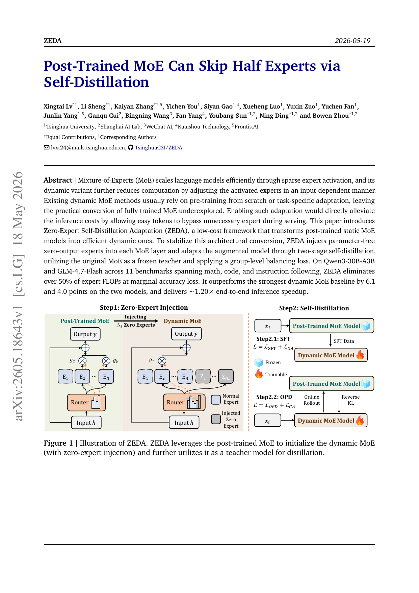
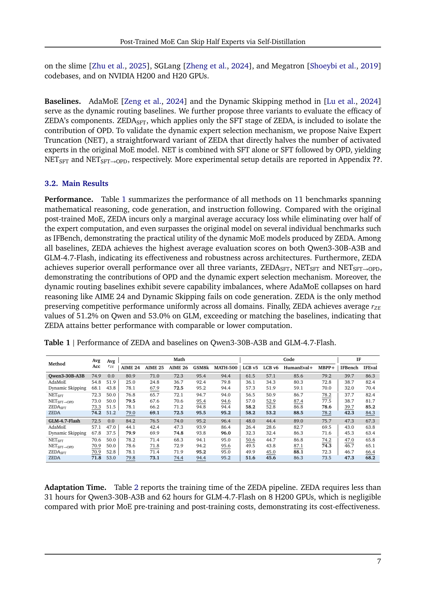
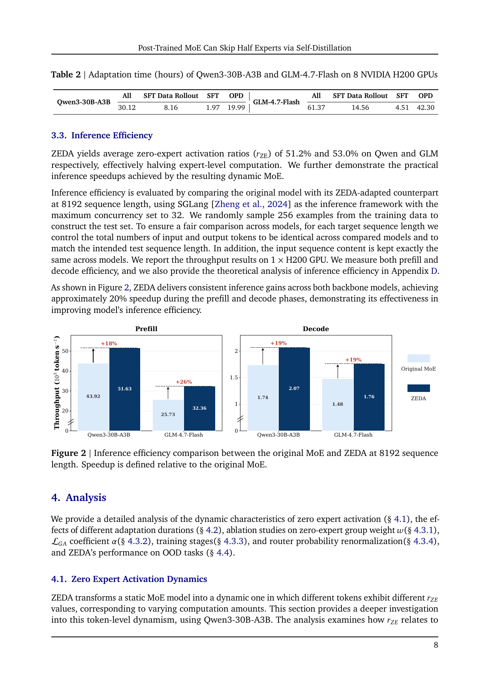
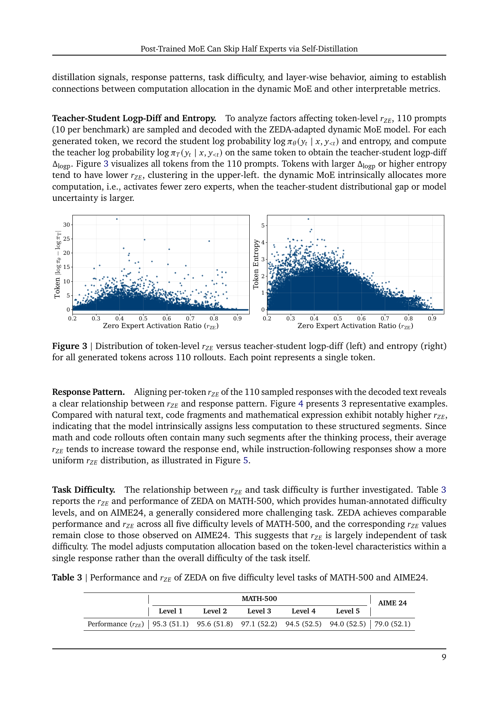
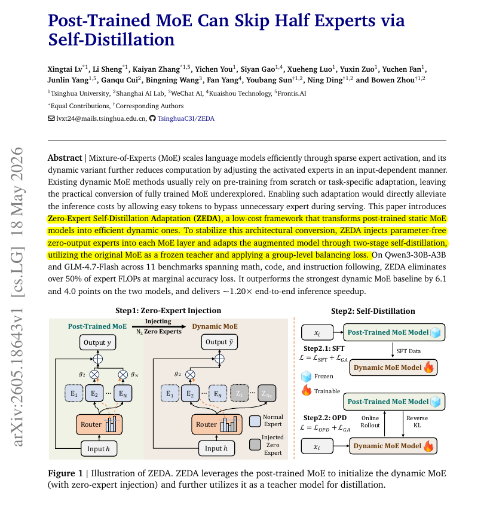

ZEDA：后训练 MoE 如何跳过一半专家计算
Rohan Paul 这条 X 帖的核心不只是“MoE 省了一半专家 FLOPs”，而是指出一个更实用的路线：已经训练好的静态 MoE，也可以在不重新预训练的前提下，学会按 token 决定是否真的需要专家计算。
问题背景
标准 MoE 已经不是“每个 token 都跑所有参数”，但它通常仍然保持固定的 top-k 专家预算。例如一个 token 无论是逗号、格式符号、代码缩进，还是难题关键推理词，都可能激活同样数量的专家。
关键区别：稀疏 MoE 解决的是“不要跑所有专家”，动态 MoE 进一步问“这个 token 到底要跑几个真实专家”。ZEDA 关注的是更现实的一步：已经 pre-training + post-training 完成的 MoE，能否低成本迁移成动态 MoE。
router 为每个 token 选择 top-k 专家，但 k 是固定的。它能省掉未选专家的计算，却不能表达“这个 token 只需要 2 个专家，而不是 8 个”。
如果从头训练动态 MoE，代价很大；如果在后训练模型上粗暴改 router，很容易破坏已经学好的专家分工、路由分布和指令能力。
保留原模型主体和原专家能力，只增加“零输出专家”作为跳过选项，再用原模型当 teacher，把新 router 适配到可用状态。
Rohan 帖子里说“many MoE tokens do not need real experts, only permission to skip them”，这句话抓住了论文的工程本质：不是每个 token 都缺模型容量，很多 token 只是缺一个合法的低计算路径。
方法机制
ZEDA 的结构很克制：不重训大模型，不重写 MoE 层，不把正常专家压缩掉。它只给 router 增加一组输出恒为 0 的候选专家，并通过两阶段自蒸馏恢复质量。
原 MoE 层有 \(N\) 个正常专家，每个 token 激活 \(K\) 个。ZEDA 加入 \(N_Z\) 个 zero experts，它们的输出恒为 0，router 候选池变成 \(N+N_Z\)，但 top-\(K\) 预算不变。
正常专家的 router 参数保留；新增 zero experts 的 router 参数按原 router 参数的均值和方差初始化。这样做的目的，是让新选项进入同一个 logit 尺度，而不是从异常尺度开始破坏路由。
原后训练 MoE 冻结为 teacher，先生成 rollout；增强后的动态 MoE 作为 student，在 teacher response 上做 SFT，同时带上 group auxiliary loss。
第二阶段进入 on-policy distillation：student 自己采样 response，teacher 在相同轨迹上提供 token-level reverse KL 目标。这样可以修正 student 测试时会进入自己分布的问题。
如果 top-\(K\) 里包含 zero experts，它们不在上式求和中出现，因为 \(Z_j(h)=0\)。因此同样是 top-\(K\)，真实专家 FFN 的计算量会按 token 变化。
这不是普通的 expert-level load balancing。它只在“正常专家组”和“零专家组”之间做约束，目标是控制 zero-expert activation ratio，同时尽量保留正常专家内部原本非均匀、输入相关的路由结构。

为什么不是 copy expert？论文附录专门比较了 zero expert 与 copy expert。copy expert 输出输入 \(h\)，会额外把隐藏状态注入 MoE 残差分支，引入 scale 和 direction mismatch；数学推理平均分从原模型 82.8 掉到 20.7。zero expert 才是真正的“跳过专家”。
实验结果
论文的结果强在两点：一是两个不同 MoE 架构上都能约减半 expert FLOPs；二是它和 AdaMoE、Dynamic Skipping、naive expert truncation 相比，没有出现明显的能力局部崩塌。
| 模型 / 方法 | Avg Acc | Avg \(r_{ZE}\) | 观察 |
|---|---|---|---|
| Qwen3-30B-A3B 原模型 | 74.9 | 0.0 | 固定专家预算，是 ZEDA 的 teacher 与质量参照。 |
| Qwen3-30B-A3B + ZEDA | 74.2 | 51.2 | 平均分只降 0.7，同时约一半激活专家变成 zero experts。 |
| GLM-4.7-Flash 原模型 | 72.5 | 0.0 | 第二个架构，用来验证方法不是只适配 Qwen。 |
| GLM-4.7-Flash + ZEDA | 71.8 | 53.0 | 平均分降 0.7，zero-expert 利用率略高于 50%。 |
11 个 benchmark，覆盖数学推理、代码生成和指令跟随：AIME 24/25/26、GSM8K、MATH-500、LiveCodeBench v5/v6、HumanEval+、MBPP+、IFBench、IFEval。
60k prompts：17k math、15k code、28k chat。SFT 用 teacher rollout，OPD 用 student rollout + teacher token-level targets。
Qwen 总计 30.12 小时，GLM 总计 61.37 小时，硬件为 8 张 NVIDIA H200。与重新 pre-training 相比，这是后处理级别成本。


必须避免的误读：“跳过一半专家 FLOPs”不等于“模型推理整体快一倍”。Attention、router、非 MoE 组件、通信和框架开销仍然存在，所以端到端吞吐提升约 20%。这恰好说明论文没有夸张：它把 expert FFN 这块省下来，但没有假装整个系统只剩 expert FFN。
动态计算到底跟什么相关
Rohan 帖子里最有洞察的一句是：compute use did not simply track task difficulty。论文也验证了这一点，但更精确的说法是：zero-expert activation 与 token-level teacher-student gap、entropy、response pattern 更相关，而不是与整道题的难度标签直接对应。
不是按任务难度粗粒度分配
论文在 MATH-500 不同难度级别和 AIME24 上比较 \(r_{ZE}\)，发现不同难度级别的 \(r_{ZE}\) 很接近。这说明模型不是看到“难题”就全程少跳专家，也不是看到“简单题”就全程多跳专家。
更像按 token 不确定性分配
当 student 与 teacher 的 token log probability 差距更大，或 student entropy 更高时，\(r_{ZE}\) 往往更低，也就是调用更多真实专家。这里的“doubt”可以理解为局部轨迹上的分布不确定性，而不是人类主观题目难度。

我的理解：ZEDA 不是让模型学一个显式 difficulty classifier，而是让 router 在蒸馏损失和 group auxiliary loss 的拉扯中自然形成计算预算偏好。容易保持 teacher 分布的 token 会更愿意走 zero expert；teacher/student 分歧大的 token 会被任务损失拉回真实专家。
边界与误读
这篇工作有很强的部署价值，但不能把它外推成“MoE 都可以免费省一半计算”。论文自己也给出了不少边界。
ZEDA 需要 teacher rollout、SFT、OPD、group auxiliary loss 和工程栈改造。它是低成本后训练适配，不是运行时改几个阈值。
zero experts 只减少正常专家 FFN 计算；attention、router、shared layers、通信和采样成本仍在。序列越长，attention 占比越高，理论和实测 speedup 都会衰减。
论文主要在 30B 级 MoE 上验证，作者明确说还没有评估 substantially larger-scale MoE deployments。
评测集中在标准后训练任务，没有覆盖长程工具调用、真实 agent 环境、状态恢复、多轮外部反馈等 workload。
Qwen OOD 平均从 76.7 到 76.2 很稳；GLM OOD 平均从 76.1 到 72.9，尤其 GPQA-Diamond 从 62.4 到 56.8，需要按业务域重新校验。
group weight \(w\) 提高会推高 \(r_{ZE}\)，但平均分会下降。部署时应按 SLA 校准，而不是盲目追求更高跳过率。
最危险的产品化误读：把 \(r_{ZE}\) 当成“token 简单程度”的直接解释。论文支持的是统计相关：它与 teacher-student gap、entropy、response pattern 相关；它不是独立验证过的语义难度标签。
工程启发
如果要把 ZEDA 当作部署路线，关键不是复述论文分数，而是把它嵌入现有 serving、监控和回归测试流程。
| 问题 | 建议 | 原因 |
|---|---|---|
| 适配哪些模型 | 优先选已经完成 post-training、服务成本高、MoE FFN 占比较大的模型。 | ZEDA 的收益来自减少真实专家 FFN；如果瓶颈在 attention、KV cache 或 IO，收益会被稀释。 |
| 怎么选 \(w\) | 把 \(w\) 当质量-成本 knob，从保守值开始，按真实业务集评估延迟、吞吐、质量和拒答率。 | 论文里 \(w=2\) 是 50% 附近的平衡点，但不同模型和任务域可能不同。 |
| 如何做回归 | 除了平均分，记录分任务分数、长输出、代码执行、科学问答、格式遵循、越狱安全与多轮一致性。 | 平均分相近可能掩盖某个高价值业务域的退化，GLM OOD 结果已经提示这个风险。 |
| 如何监控线上 | 按 token / layer 记录 zero-expert ratio 分布、p95/p99 latency、输出长度、router 异常漂移和高不确定性片段。 | ZEDA 的动态性本身就是系统行为，不能只看最终答案。router 分布漂移可能先于质量退化出现。 |
| 与推理框架关系 | 需要 serving runtime 真正跳过 zero experts 并减少通信/调度开销，不能只在理论 FLOPs 上省。 | 论文使用 SGLang 做实测；真实收益取决于 kernel、expert parallel、通信框架和 batch 形态。 |
我的判断
ZEDA 的深层价值，是把 MoE 的“稀疏激活”从容量扩展技术推进到预算控制技术。
传统 MoE 让模型在“调用哪些专家”上稀疏；ZEDA 让模型在“要不要调用真实专家”上也稀疏。这个差异很重要，因为它把算力从架构超参变成了 token-level policy。
我不认为这篇论文的结论应该被理解为“模型一半计算都是浪费”。更准确的说法是：在后训练 MoE 中，有一部分 token 的专家 FFN 更新对 teacher behavior 的边际贡献很低，因此可以通过自蒸馏把它们迁移到零计算路径上。这个迁移是否成立，取决于 teacher/student 分布差距、router 正则、业务域覆盖和 serving runtime 的实际开销。
它真正打开的是一个方向：未来的大模型不只要学会输出 token，还要学会为每个 token 选择计算强度。现在的 test-time scaling 通常是在样本级别加算力，例如多采样、多轮搜索、verifier rerank；ZEDA 是在模型内部把算力分配下沉到 token 与 layer 级别。两条线最终可能会合并：外层决定一道任务值得多少预算，内层决定每个 token 值得多少专家计算。
最值得继续追的问题：如果 router 的 zero-expert ratio 真的反映局部分布不确定性，那么它能否成为在线 serving 的自诊断信号？例如当某类请求的 \(r_{ZE}\) 长期异常下降，是否意味着模型遇到了分布漂移、提示攻击或业务输入变难？论文没有回答，但这是 ZEDA 除了省钱之外更有想象力的地方。
证据边界与资料索引
本文以 Rohan Paul 对论文的技术摘要为入口；真正的机制、公式、实验表和局限来自论文与官方仓库。结论以论文为主，X 帖只作为问题入口和观点提示。
主帖 ID 为 2058620038693999012，作者 Rohan Paul。帖子强调“很多 token 不需要真实专家”“ZEDA 像 attention to computational doubt”，并给出论文 arXiv ID 2605.18643。
题名为 Post-Trained MoE Can Skip Half Experts via Self-Distillation，作者来自 Tsinghua University、Shanghai AI Lab、WeChat AI、Kuaishou Technology、Frontis.AI。PDF 共 25 页。
TsinghuaC3I/ZEDA 提供 README、训练脚本说明、模型和数据集发布入口。仓库说明了基于 slime、SGLang、Megatron 的训练与评估流程。
论文的公式、实验表和关键数值在 arXiv 论文、TsinghuaC3I/ZEDA 仓库 README 和主帖配图之间核对一致；X 帖中的解读性表述均可在论文对应章节找到出处。
